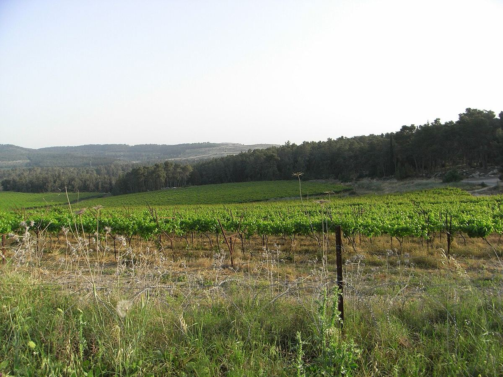

Israel
Israel combines a winemaking tradition thousands of years old with a modern industry that was transformed from the 1980s onwards. Its quality wines come mainly from high, cool areas, and a large share of production is kosher.

History
Vines and wine have been present in this part of the eastern Mediterranean for thousands of years. Archaeological finds of stone presses, cellars and amphorae, as well as the many references to wine in biblical texts, show the importance it had in the agricultural and religious life of Antiquity. In Roman and Byzantine times wines were made here and traded across the Mediterranean. After the arrival of Islam, production declined for centuries and was largely reduced to the ritual use of Jewish and Christian communities.
Modern viticulture began in the late nineteenth century, when Baron Edmond de Rothschild, owner of Château Lafite, financed the planting of vineyards and the building of wineries in new agricultural settlements such as Rishon LeZion and Zikhron Ya’akov. From that effort came the Carmel winery, which dominated the market for much of the twentieth century. For decades production was geared mainly towards sweet sacramental wines and everyday wines.
The turning point came in the 1980s, when the founding of Golan Heights Winery, which planted French varieties on the volcanic uplands of the north and applied modern winemaking techniques, demonstrated the country’s potential for quality wine. In the following decades numerous small and medium-sized wineries appeared, such as Domaine du Castel in the Judean Hills, and the large houses also renewed their vineyards and their style.
Climate and soils
The climate is Mediterranean, with rain concentrated in winter and long, hot, dry summers. As elsewhere in the eastern Mediterranean, altitude and proximity to the sea are decisive: the best areas lie in the northern uplands and in the hills near Jerusalem, where nights are cooler. In the south, in the Negev desert, vineyards depend on drip irrigation, a technique highly developed in the country, and benefit from the difference between day and night temperatures. Soils are very diverse: basalt and volcanic tuff in the north, terra rossa and limestone in the hill areas, and sandy or loess soils in the south.
Regions
The Israeli wine classification distinguishes five main regions: Galilee, which includes Upper Galilee and the Golan Heights; Shomron, around Mount Carmel and the hills near the coast; Samson, on the plains and foothills between the coast and the Judean Hills; the Judean Hills, west and south of Jerusalem; and the Negev, in the south. The high areas of Galilee, the Golan and Judea are home to many of the best-known wineries.
Grape varieties and styles
Quality viticulture is based on international varieties. Cabernet Sauvignon is the most widely used red for top wines, alongside Merlot, Syrah, Cabernet Franc and Petite Sirah. Carignan, planted for decades for everyday wines, has been reappraised in old-vine bottlings. Among the whites, Chardonnay, Sauvignon Blanc and Gewürztraminer stand out. There is also Argaman, a crossing developed in Israel, and some producers are researching ancient varieties of the region. Styles range from Bordeaux-style reds aged in barrel to fresh whites, rosés and traditional-method sparkling wines.
Kosher wine
A very large share of production is kosher, that is, made in accordance with Jewish religious rules: among other things, the wine must be handled in the winery by observant Jews and may not contain non-permitted ingredients. Some wines are also mevushal, subjected to a heat treatment that broadens their use in certain religious contexts. Kosher certification does not in itself imply any particular style, and both simple wines and highly ambitious ones are made under it.
Regions & appellations
Golan Heights
Wine region · A volcanic plateau at the foot of Mount Hermon, whose high-altitude vineyards were planted from the 1970s onwards. Its cool nights and basalt soils produce Bordeaux-style reds, whites and sparkling wines with good acidity.
Judea (Judean Hills)
Wine region (Harei Yehuda, the Judean Hills) · A region of limestone hills around Jerusalem, one of Israel’s five main wine regions. Its high-altitude vineyards, on land with a winegrowing history going back millennia, give Bordeaux-style and Mediterranean reds and fresh whites.
Galilee
Wine region (Galil), with the Upper Galilee, Lower Galilee and Golan Heights subregions · Israel’s northernmost wine region and its most highly regarded for quality wine. Its high-altitude vineyards, on limestone and volcanic soils, give structured reds and fresh whites.